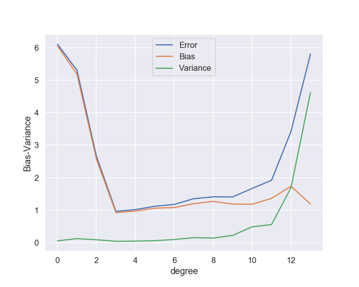

6. Model validation¶
In this lecture we will continue to explore linear regression and we will encounter several concepts that are common for machine learning methods. These concepts are:
Model validation
Overfitting and underfitting
Bias-variance-tradeoff
Regularization
Model hyperparameters
Gradient descent optimization
Learning curves
This lecture is accompanied by a demonstration Jupyter notebook. Furthermore, you will get your own experience with these concepts when working on the linear regression exercise and the problem set.
The lecture is based and inspired by material in several good textbooks: in particular chapter 4 in Hands‑On Machine Learning with Scikit‑Learn and TensorFlow by Aurelien Geron and chapter 5 in the Python Data Science Handbook by Jake VanderPlas. The cross-validation example with Ridge Regularization is taken from teaching material developed by Morten Hjorth-Jensen at the Department of Physics, University of Oslo & Department of Physics and Astronomy and National Superconducting Cyclotron Laboratory, Michigan State University.
6.1. Over- and underfitting¶
Overfitting and underfitting are common problems in data analysis and machine learning. Both extremes are illustrated in Fig. fig-over_under_fitting from the demonstration notebook.

The following quote from an unknown source provides a concise definition of overfitting and underfitting:
A model overfits if it fits noise as much as data and underfits if it considers variability in data to be noise while it is actually not.
The question is then: How do we detect these problems and how can we reduce them.
We can detect over- and underfitting by employing holdout sets, also known as validation sets. This means that we only use a fraction of the data for training the model, and save the rest for validation purposes. I.e. we optimize the model parameters to best fit the training data, and then measure e.g. the mean-square error (MSE) of the model predictions for the validation set (sometimes called “test set”).
An underfit model has a high bias, which means that it gives a rather poor fit and the performance metric will be rather bad (large error). This will be true for both the training and the validation sets.
An overfit model typically has a very large variance, i.e. the model predictions reveal larger variance than the data itself. We will discuss this in more detail further down. High variance models typically perform much better on the training set than on the validation set.
Alternatively, a telltale sign for overfitting is the appearance of very large fit parameters that are needed for the fine tunings of cancellations of different terms in the model. The fits from our example has the following root-mean-square parameters
order |
\(\theta_\mathrm{rms}\) |
|---|---|
1 |
3.0e-01 |
3 |
1.2e+00 |
100 |
6.3e+12 |
6.2. Regularization: Ridge and Lasso¶
Assuming that overfitting is characterized by large fit parameters, we can attempt to avoid this scenario by regularizing the model parameters. We will introduce two kinds of regularization: Ridge and Lasso. In addition, so called elastic net regularization is also in use and basically corresponds to a linear combination of the Ridge and Lasso penalty functions.
Let us remind ourselves about the expression for the standard Mean Squared Error (MSE) which we used to define our cost function and the equations for the ordinary least squares (OLS) method. That is our optimization problem is
or we can state it as
where we have used the definition of a norm-2 vector, that is
By minimizing the above equation with respect to the parameters \(\boldsymbol{\theta}\) we could then obtain an analytical expression for the parameters \(\boldsymbol{\theta}\). We can add a regularization parameter \(\lambda\) by defining a new cost function to be minimized, that is
which leads to the Ridge regression minimization problem where we constrain the parameters via \(\vert\vert \boldsymbol{\theta}\vert\vert_2^2\) and the optimization equation becomes
Alternatively, Lasso regularization can be performed by defining
Here we have defined the norm-1 as
Lasso stands for least absolute shrinkage and selection operator.

6.2.1. More on Ridge Regression¶
Using the matrix-vector expression for Ridge regression,
by taking the derivatives with respect to \(\boldsymbol{\theta}\) we obtain then a slightly modified matrix inversion problem which for finite values of \(\lambda\) does not suffer from singularity problems. We obtain
with \(\boldsymbol{I}\) being a \(p\times p\) identity matrix
We see that Ridge regression is nothing but the standard OLS with a modified diagonal term added to \(\boldsymbol{X}^T\boldsymbol{X}\). The consequences, in particular for our discussion of the bias-variance are rather interesting. Ridge regression imposes a constraint on the model parameters
with \(t\) a finite positive number.
For more discussions of Ridge and Lasso regression, see: Wessel van Wieringen’s article or Mehta et al’s article.
6.3. The bias-variance tradeoff¶
We will discuss the bias-variance tradeoff in the context of continuous predictions such as regression. However, many of the intuitions and ideas discussed here also carry over to classification tasks. Consider a dataset \(\mathcal{L}\) consisting of the data \(\mathbf{X}_\mathcal{L}=\{(y_j, \boldsymbol{x}_j), j=0\ldots n-1\}\).
Let us assume that the data with experimental noise is generated from a true model
where \(\boldsymbol{\epsilon}_\mathrm{exp}\) is a vector of random variables. We will assume that these are independent and identically distributed (i.i.d), each one described by a normal (Gaussian) distribution with expectation (mean) value zero and variance \(\sigma^2_\mathrm{exp}\).
In our derivation of the ordinary least squares method we defined then an approximation to the function \(f\) in terms of the parameters \(\boldsymbol{\theta}\) and the design matrix \(\boldsymbol{X}\) which embody our model, that is
The relation between the true description and our model is
Thereafter we found the optimum set of model parameters \(\boldsymbol{\theta}\) by minimizing the mean-squared (model) error via the so-called cost function
where we have made the key assumption that the residuals \((\boldsymbol{y}-\boldsymbol{\tilde{y}})\) are independent and identically distributed (i.i.d.) random variables, i.e. these are samples from a single underlying probability distribution. Remember that \(\mathbb{E}(t)\) denotes the expectation value for the random variable \(t\). In this context we also remind that the variance is given by \(\mathrm{Var}(t) = \mathbb{E} \left[ \left(t - \mathbb{E}(t)\right)^2 \right]\).
We can rewrite this expectation value as
The first of the three terms represents the square of the bias of the learning method, which can be thought of as the error caused by the simplifying assumptions built into the method. The second term represents the variance of the chosen model and finally the last terms is the irreducible error \(\epsilon_\mathrm{exp}\). We will view these terms from a slightly different angle once we familiarise ourselves with Bayesian methods.
To derive this equation, we need to recall that the variance of \(y\) and \(\epsilon_\mathrm{exp}\) are both equal to \(\sigma^2_\mathrm{exp}\). The mean value of \(\epsilon_\mathrm{exp}\) is by definition equal to zero. Furthermore, the function \(f\) is not a stochastic variable. We use a more compact notation in terms of the expectation value
and adding and subtracting \(\mathbb{E}\left[\tilde{y}\right]\) we get
We can rewrite this expression as a sum of three terms:
The first one is the (squared) bias of the model plus the irreducible data error \(\sigma_\mathrm{exp}^2\)
The second one is the variance of the model \(\mathrm{Var}\left[ \tilde{y} \right]\)
and the last one is zero
The tradeoff between bias and variance is illustrated in Fig. fig-bias_variance from the demonstration notebook.

6.4. Summing up¶
The bias-variance tradeoff summarizes the fundamental tension in machine learning, particularly supervised learning, between the complexity of a model and the amount of training data needed to train it. Since data is often limited, in practice it is often useful to use a less-complex model with higher bias, that is a model whose asymptotic performance is worse than another model because it is easier to train and less sensitive to sampling noise arising from having a finite-sized training dataset (smaller variance).
The above equations tell us that in order to minimize the expected validation error, we need to select a statistical learning method that simultaneously achieves low variance and low bias. Note that variance is inherently a nonnegative quantity, and squared bias is also nonnegative. Hence, we see that the expected validation MSE can never lie below \(\mathrm{Var}(\boldsymbol{\epsilon}_\mathrm{exp}) \equiv \sigma^2_\mathrm{exp}\), the irreducible error.
What do we mean by the variance and bias of a statistical learning method? The variance refers to the amount by which our model would change if we estimated it using a different training data set. Since the training data are used to fit the statistical learning method, different training data sets will result in a different estimate. But ideally the estimate for our model should not vary too much between training sets. However, if a method has high variance then small changes in the training data can result in large changes in the model. In general, more flexible statistical methods have higher variance.
6.5. Model validation strategy¶
Let us summarize the basic recipe for applying a supervise machine-learning model:
Choose a class of models
Choose model hyperparameters
Fit the model to the training data
Use the model for predictions
In our examples so far, the class of models has been linear regression models with polynomial basis functions. Hyperparameters then correspond to the choice of polynomial degree, and the Ridge regularization factor \(\lambda\) if we use this technique, etc.
In order to make an informed choice for these hyperparameters we need to validate that our model and its hyperparameters provide a good fit to the data. This important step is typically known as model validation, and it most often involves splitting the data into two sets: the training set and the validation set.
The model is then trained on the first set of data, while it is validated (by computing your choice of performance score) on the validation set.
Question. Why is it important not to train and evaluate the model on the same data?
6.6. Cross-validation¶
Cross-validation is a strategy to find model hyperparameters that yield a model with good prediction
performance. A common practice is to hold back some subset of the data from the training of the model and then use this holdout set to check the model performance. The splitting of data can be performed using the the train_test_split utility in Scikit-Learn.
One of these two data sets, called the training set, plays the role of original data on which the model is built. The second of these data sets, called the validation set, plays the role of the novel data and is used to evaluate the prediction performance (often operationalized as the log-likelihood or the prediction error: MSE or R2 score) of the model built on the training data set. This procedure (model building and prediction evaluation on training and validation set, respectively) is done for a collection of possible choices for the hyperparameters. The parameter that yields the model with the best prediction performance is to be preferred.
The validation set approach is conceptually simple and is easy to implement. But it has two potential drawbacks:
The validation estimate of the validation error rate can be highly variable, depending on precisely which observations are included in the training set and which observations are included in the validation set. There might be data points that are critical for training the model, and the performance metric will be very bad if those happen to be excluded from the training set.
In the validation approach, only a subset of the observations, those that are included in the training set rather than in the validation set are used to fit the model. Since statistical methods tend to perform worse when trained on fewer observations, this suggests that the validation set error rate may tend to overestimate the validation error rate for the model fit on the entire data set.
To reduce the sensitivity on a particular data split, one can use perform several different splits. For each split the model is fit using the training data and evaluated on the corresponding validation set. The hyperparameter that performs best on average (in some sense) is then selected.
6.6.1. \(k\)-fold cross validation cross-validation¶
When the repetitive splitting of the data set is done randomly, samples may accidently end up in a fast majority of the splits in either training or validation set. Such samples may have an unbalanced influence on either model building or prediction evaluation. To avoid this \(k\)-fold cross-validation is an approach to structure the data splitting. The samples are divided into \(k\) more or less equally sized, exhaustive and mutually exclusive subsets. In turn (at each split) one of these subsets plays the role of the validation set while the union of the remaining subsets constitutes the training set. Such a splitting warrants a balanced representation of each sample in both training and validation set over the splits. Still the division into the \(k\) subsets involves a degree of randomness. This may be fully excluded when choosing \(k=n\). This particular case is referred to as leave-one-out cross-validation (LOOCV).
6.6.1.1. How to set up k-fold cross-validation¶
Define a range of interest for the model hyperparameter(s) \(\lambda\).
Divide the data set \(\mathcal{D} = \{1, \ldots, n\}\) into \(k\) exhaustive and mutually exclusive subsets \(\mathcal{D}_{i} \subset \mathcal{D}\) for \(i=1,\ldots,k\), and \(\mathcal{D}_{i} \cap \mathcal{D}_{j} = \emptyset\) for \(i \neq j\).
For \(i \in \{1, \ldots, k\}\):
Define \(\mathcal{D}_{i}\) as the validation set and \(\mathcal{D}_{-i} = \mathcal{D} - \mathcal{D}_i\) as the training set.
Fit the model for each choice of the hyperparameter using the training set, which will give a best fit \(\boldsymbol{\theta}_{-i}(\lambda)\).
Evaluate the prediction performance of these models on the validation set by the MAE, MSE, or the R2 score function.
Average the prediction performances of the validation sets at each grid point of the hyperparameter by computing the cross-validated error. It is an estimate of the prediction performance of the model corresponding to this value of the penalty parameter on novel data. For example, using the MSE measure it is defined as
The value of the hyperparameter that minimizes the cross-validated error is the value of choice.